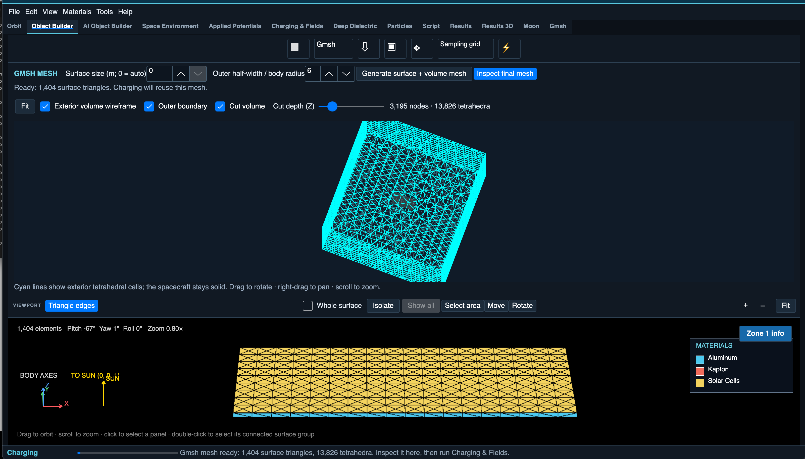
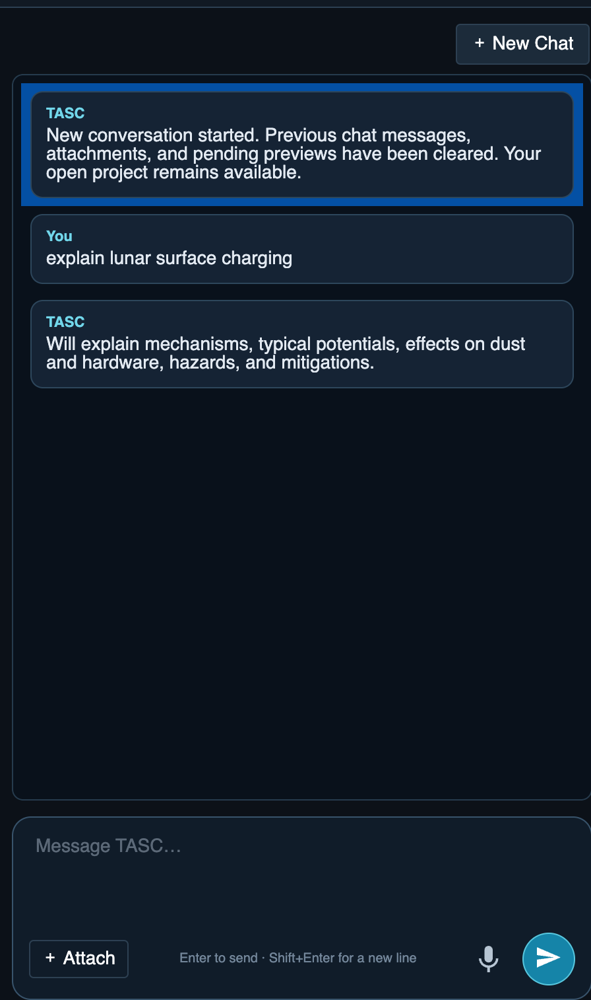

SPACE DOMAIN
Engineering tools for the space environment.
Explore spacecraft geometry, prepare meshes, and bring space engineering questions into the AI conversation inside TASC.
01 / GEOMETRY & MESH
Inspect the spacecraft and its surrounding mesh.

Review geometry before charging analysis.
This example shows the exterior tetrahedral mesh and the spacecraft surface mesh in one workspace. Boundary and cut-volume controls help inspect the surrounding mesh, while the material legend identifies aluminum, Kapton, and solar cells. The view shows mesh preparation rather than a charging result.
02 / SPACE ENGINEERING CONVERSATION
Start with a question about lunar surface charging.
“explain lunar surface charging”
The second example shows a question entered in TASC’s AI chat. The reply outlines the topics to cover: mechanisms, typical potentials, effects on dust and hardware, hazards, and mitigations.
The screenshot captures the start of the conversation and its response outline.
